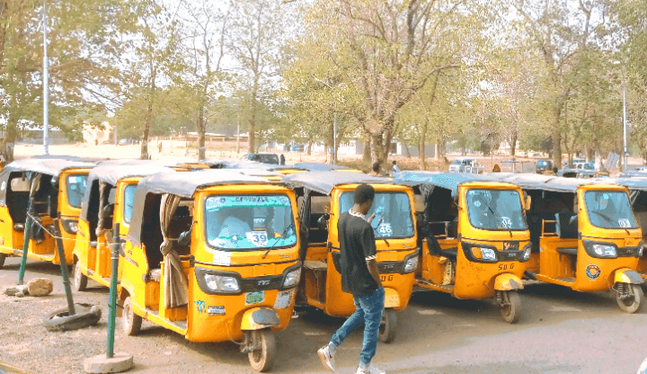

Iṣẹ́ Ọkọ Agbègbè
Àwọn ọkọ Keke Napep jẹ́ aṣayan ọkọ agbègbè olókìkí ní Yola fún ẹrẹ̀ ẹ̀jẹ̀. Àwọn ọkọ alógún yìí n pese owó àṣayan àti ịran rọrùn kaakiri ìlu àti àwọn agbègbè àgbègbè.
Rí Keke Napep àwọn ọkọ tricycle ni àwọn ibùdó tí a yan kaakiri ìlu fún ọkọ agbègbè rọrùn.